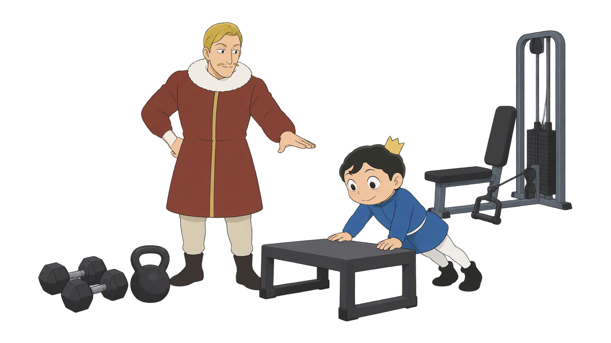
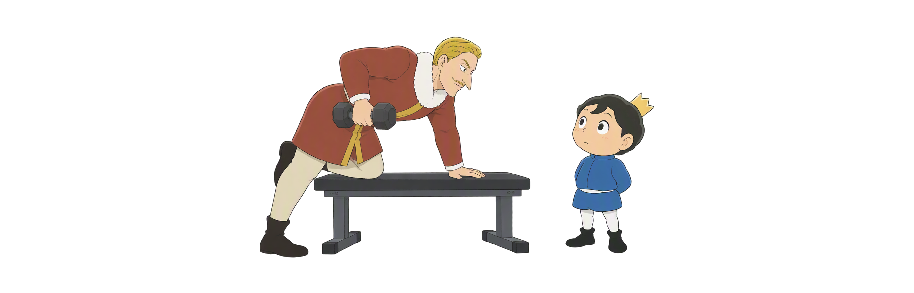
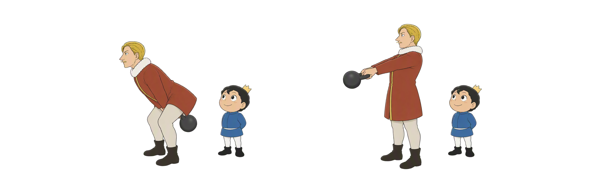
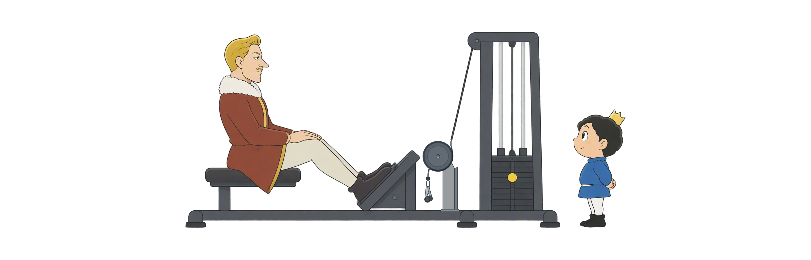
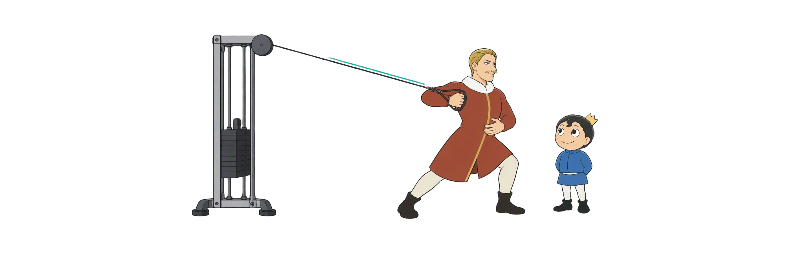
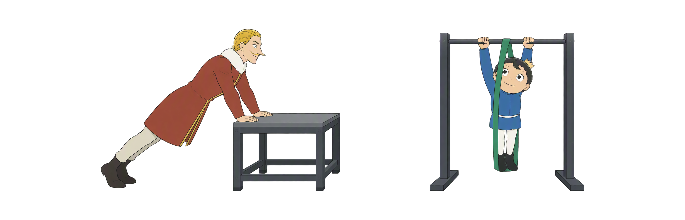
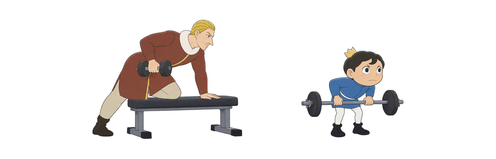

Day 43
器械训练不只看重量
哑铃 × 壶铃 × 固定器械 × 自重 先选可控制的版本，再考虑进阶
哑铃单侧壶铃髋铰链自重进退阶

哑铃 × 壶铃 × 固定器械 × 自重 先选可控制的版本，再考虑进阶
六个入口帮你把动作、设置与当前能力连起来。壶铃高翻、抓举和土耳其起立需现场指导。
左右各自走稳 · 不急加重
后移再伸髋 · 手臂连接
先前架 · 再练转换
座位轴线 · 轻载试做
滑轮高度 · 站位先稳
上斜与辅助 · 小步调整
图示用于理解动作与器械关系；疼痛、握持失控或明显疲劳时，先停止并回退。
自由轨迹需要更多稳定。先把拿放、起始位和支撑安排好，再谈重量和范围。
单臂动作可以观察控制差异，却不等于给身体下诊断。支撑方式和站姿会改变任务。

先学髋部后移与站稳，再用协调伸髋把壶铃带向前上方；手臂主要连接壶铃。

壶铃快速动作先分解髋部发力、前架和稳定终点；不让铃反复砸在前臂，也不抢重量。
从地面到站立包含多个支撑转换。先分段练路线和肩部稳定，不赶时间完成整套。
轨迹固定能减少部分自由度，但仍要按身材调整座位、支撑、范围和配重，再从轻载试做。

滑轮高度、把手和站位决定你在对抗什么方向。站稳、控回程，比复杂附件更重要。

俯卧撑和引体可用支撑高度、辅助量和范围找到可学习难度；自重不等于没有负荷或风险。

都要上臂后移、屈肘和躯干控制；支撑方式决定抗旋转挑战，别把器械名称当结论。
